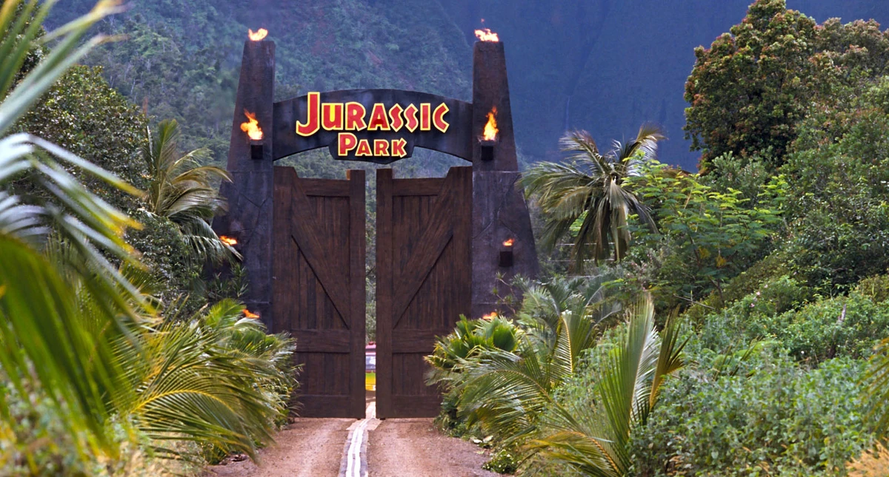

Life Finds A Way
Located 120 miles off the coast of Costa Rica, Isla Nublar houses InGen's biological reserve of cloned prehistoric fauna. Utilizing amphibian DNA to bridge genetic gaps, dinosaur cloning achieved reality in 1993.

DINOSAUR SPECIES PROFILES
TYRANNOSAURUS REX
Tyrannosaurus rex - The ultimate apex predator of the late Cretaceous. Possesses a bite force exceeding 12,000 lbs and binocular vision sensitive to motion.
VELOCIRAPTOR
Velociraptor antirrhopus - Lethal pack hunter armed with a 6-inch retractable sickle claw on each foot. Highly intelligent with complex vocal communications.
TRICERATOPS
Triceratops horridus - Massive three-horned herbivore featuring a heavy bony neck frill. Lives in peaceful herd structures across grassy plains.
DILOPHOSAURUS
Dilophosaurus wetherilli - Distinctive dual-crested carnivore capable of expanding a colorful neck frill and spitting blinding neurotoxic venom.
BRACHIOSAURUS
Brachiosaurus altithorax - Colossal sauropod with longer forelimbs than hindlimbs, allowing it to feed on tree-canopy foliage up to 30 feet high.
PTERANODON
Pteranodon longiceps - Flying reptile featuring a 23-foot wingspan and a prominent cranial crest used for flight stability and display.
ISLA NUBLAR RADAR MAP
HOW IT STARTED (1984-1993)
AMBER EXTRACTION
Fossilized amber containing prehistoric mosquito blood discovered in Dominican mines by InGen field team.
GENE SPLICING
Complete genome sequences assembled using frog DNA bridges inside Isla Sorna research facilities.
ISLAND INFRASTRUCTURE
Construction of Visitor Center, geothermal power plant, and 10,000V electric perimeter grids completed.
THE GATES OPEN
Founder John Hammond announces completion of Isla Nublar safari preserve. "Welcome to Jurassic Park."